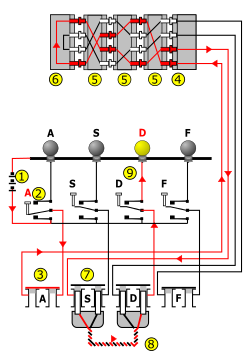
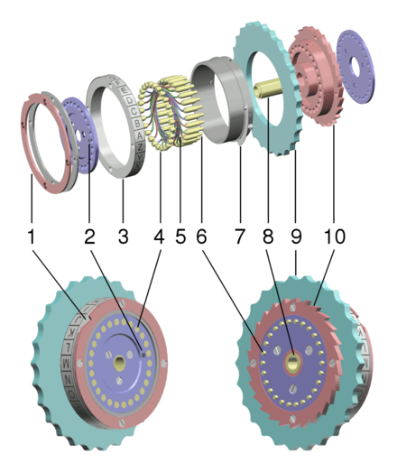
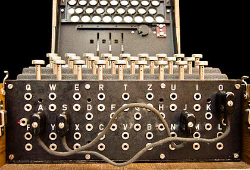

以下为本实验的重要提示：
恩尼格玛密码机（德语：Enigma，又译恩尼格密码机、哑谜机、奇谜机或谜式密码机）是一种用于加密与解密文件的密码机。确切地说，恩尼格玛是对二战时期纳粹德国使用的一系列相似的转子机械加解密机器的统称，它包括了许多不同的型号，为密码学对称加密算法的流加密。20世纪20年代早期，恩尼格玛密码机开始应用于商业，一些国家的军队与政府也使用过该密码机，密码机的主要用户包括第二次世界大战时的纳粹德国。
在恩尼格玛密码机的所有版本中，最著名的是德国使用的军用版本。尽管此机器的安全性较高，但盟军的密码学家们还是成功地破译了大量由这种机器加密的信息。1932年，波兰密码学家马里安·雷耶夫斯基、杰尔兹·罗佐基和亨里克·佐加尔斯基根据恩尼格玛机的原理破译了它。1939年中期，波兰政府将此破译方法告知了英国和法国，但直到1941年英国海军捕获德国U-110潜艇，得到密码机和密码本后才成功破译。密码的破译使得纳粹海军对英美商船补给船的大量攻击失效。盟军的情报部门将破译出来的密码称为ULTRA，ULTRA极大地帮助了西欧的盟军部队。关于ULTRA到底对战争有多大贡献尚存争论，但普遍认为盟军在西欧的胜利能够提前两年，完全是因为恩尼格玛密码机被成功破译的缘故。
尽管恩尼格玛密码机在加密方面有不足之处，但是经它加密的文件还是很难破译，盟军能够破译它的密码是因为德国军队犯了其它一些大的错误（如加密员的失误、使用步骤错误、机器或密码本被缴获等等）。
与其它转子机械相同的是，恩尼格玛密码机也结合了机械系统与电子系统。机械系统包括了一个包含字母与数字的键盘，依次排列在一个轴上的一系列名为 “转子”的旋转圆盘，还有一个在每次按键后就使一个或几个转子旋转的设备。各种恩尼格玛密码机上的机械系统各不相同，它们之间最大的共同点是，每次按键后 最右边的转子都会旋转，并且有时候与它相邻的转子也会旋转。转子持续的旋转会造成每次按键后得到的加密字母都不一样。
机械系统这样运行的原因，是要产生不同的电流通路，字母的加密由机器自动完成。当一个键被按下后，电流会流过通路，最终点亮其中一个灯，这个灯显示的就是 加密后的字母。举例来说，如果想要发送一条以ANX开头的信息，操作员会先按下A键，这时灯Z就可能变亮，Z就是加密后的信息的第一个字母。操作员之后会 按同样的步骤继续输入信息。
为了解释恩尼格玛密码机的工作原理，我们用图1的图表进行说明。为了使读者更容易理解，在此只显示4个键及灯和其它组件。实际上，恩尼格玛 密码机拥有显示灯、按键、插孔和线路各26个。电流首先从电池①流到双向开关②，再流到接线板③。接线板的作用是将键盘②与固定接口④连接起来。接下来， 电流会流到固定接口④，然后流经3个或4个转子⑤，之后进入反射器⑥。反射器将电流从另一条线路 向反方向导出，电流会再一次通过转子⑤和固定接口④，之后到达插孔S，又通过一条电线⑧流到插孔D，最后通过另一个双向开关⑨去点亮显示灯。转子的转动造成的电流路径的持续变化使恩尼格玛密码机（在当时）具有了高度的保密性。

图1 恩尼格玛密码机原理图
转子组成了恩尼格玛密码机的核心部分。每个转子的直径大约为10厘米，形状为圆盘形，由硬质橡胶或电木制成，一系列由弹簧承载的黄铜管 脚呈环形排列于其中一面，而另一面相对应的则是圆形的金属触点。管脚与触点代表的是字母表上的全部字母，典型的排列就是A-Z（以下的介绍全部假设转子为 这种排列方式）。当两个转子的位置相邻时，其中一个的管脚就会接触另外一个的金属触点，这就形成了一个通路。在转子内部，有26条金属线将一面的管脚与另 一面的触点连接起来，这些金属线的排列方式在每个转子内都有所不同。
图2中数字分别代表的含义：1.具有V形刻痕的外环 2.显示触点A位置的一个标记 3.字母环 4.金属触点 5.连接触点与管脚的线路 6.管脚 7.调节器 8.轴 9.方便操作员转动的外环 10.棘轮（防止倒转）

图2 恩尼格玛密码机转子结构图
除了早期的A型和B型之外，恩尼格玛密码机的最后一个转子之后都有一个反射器，反射器是恩尼格玛密码机与当时其它转子机械之间最显著的区别。它将最后一个转子的其中两个触点连接起来，并将电流沿一个不同的路线导回。这就使加密过程与解密过程变得一致。但是，反射器也使恩尼格玛密码机具有了如下性质： 加密后得到的字母与输入的字母永远不会相同。这在概念上和密码学上都是一个严重的错误，这个错误最终被解码人员利用。
接线板上的每条线都会连接一对字母。这些线的作用就是在电流进入转子前改变它的方向。为了解释它的原理，我们把E插口和Q插口连接起来。当操作员按下E键时，电流就会先流到Q插口（相当于按下Q键）再流经转子。接线板上最多可以同时接13条线。电流会从键盘流经接线板，之后进入转子。接线板上的每个插口内都有两个插孔，当将插头插入时，上插孔（连到键盘）与下插孔（连到转子）之间 的连接就会被断开。另外一个插口内的上插孔会与此插口内的下插孔连接起来，而下插孔会与此插口内的上插孔连接起来，这样就完成了两个插口之间的连接。

图3 接线板示意图
接线板位于恩尼格玛密码机前部键盘的下方。当用到接线板时，操作员最多可以在上面接13条线。在图3中，接线板上共有两对字母被连接起来（S-O和J-A）。